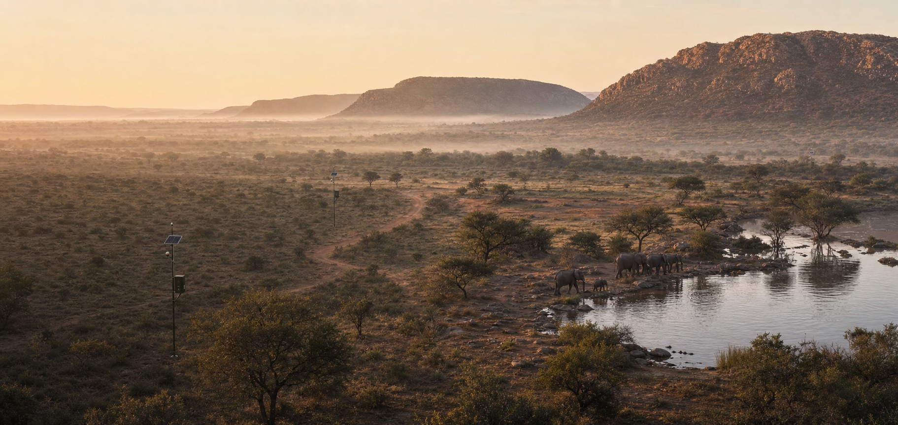
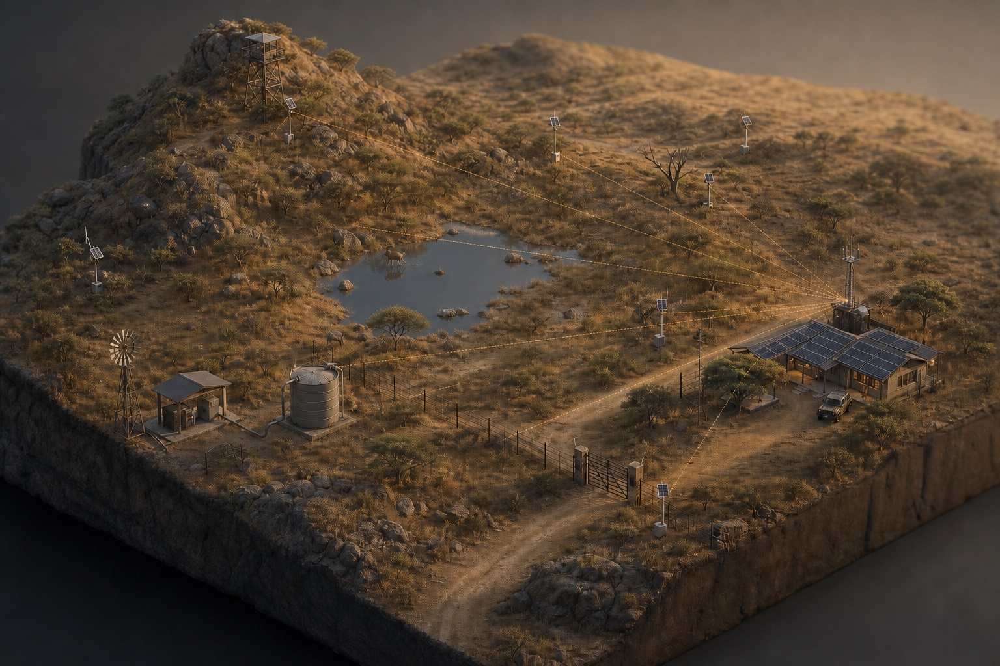
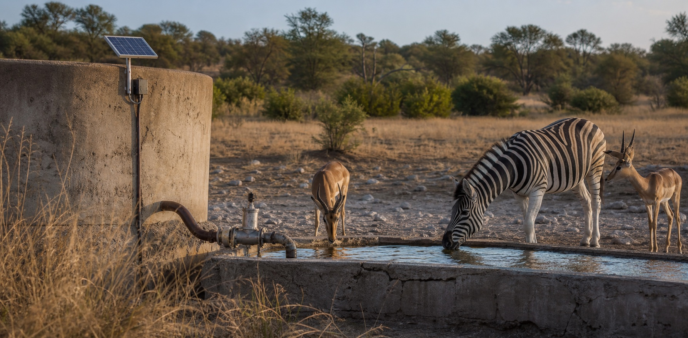
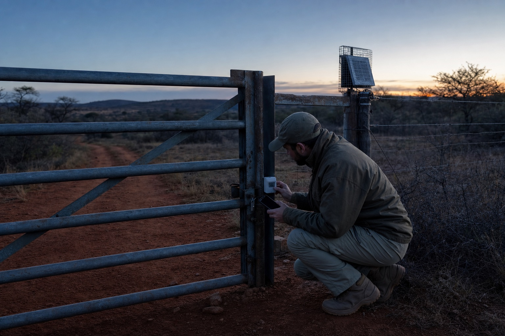
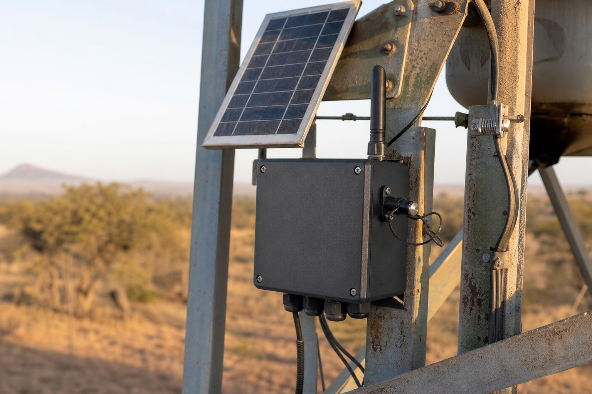

SenseAny useful signal
Level, flow, contact, pulse, power, rainfall, pressure or quality.

Field intelligence for wild places
Mistbits Reserve connects water, security and operations across thousands of hectares—without needing cellular coverage at every point.
A natural next step
Smarta already brings remote pumps, boreholes and reservoirs into one dependable operation. Reserve takes that field experience—and the new V3 logger—much further.
Every node can sense locally, keep a record when the network disappears, and pass essential data across a low-power Meshtastic mesh until it reaches a gateway. One gateway can then carry the whole reserve into the Mistbits cloud.
One resilient field network
Small, solar-ready nodes listen to what matters. The mesh carries it over the horizon. Mistbits turns it into alerts, trends and action.

Level, flow, pump state and water quality—measured where the water is, not where the signal stops.
Level, flow, contact, pulse, power, rainfall, pressure or quality.
Data finds a route through nearby nodes with acknowledgement and retry.
One platform turns readings into alerts, reports, trends and control.
Start with what costs you sleep
Each deployment starts with a real operational problem. Add sensors over time without building another disconnected system.

Gates & assets
Wildlife & livestock
Fire & weather
Pumps & energy
Make it yours

Alerts with context
A gate opening is just a signal. Reserve adds the context: which gate, when it moved, whether the nearby node is still healthy, and what happened immediately before and after.
“Gate 07 opened outside schedule. Vibration detected. Node online. Ranger team notified.”

V3 field installation · concept enclosureThe field node
Reserve is built around the real Mistbits Logger V3 architecture—not a pretend piece of concept hardware.
Meshtastic mesh, GSM or Wi-Fi transport—configured for the site and its gaps.
Dual analogue channels, digital input, pulse counting, sensor power and relay control.
Flash-backed queues, app-level acknowledgements and safe retry when links are unreliable.
Battery, signal, uptime, storage and mesh utilisation travel with the sensor data.
The interesting part
Ideas worth prototyping once the network is in place.
Correlate tank drawdown with camera or beam counts to understand animal visits without watching hours of footage.
Level + flow + countDivide an electric fence into monitored zones so a team searches hundreds of metres, not kilometres.
Voltage + zone healthCatch a pump running without flow, drawing abnormal power or cycling too often before it becomes a failure.
Pulse + power + logicSee rainfall and fire conditions across the property instead of relying on the gauge beside the office.
Rain + RH + windLet a ranger’s nearby node pass a low-bandwidth check-in or task event through the reserve mesh.
BLE + mesh eventStart with one real problem
We’ll map a small pilot around your land, your coverage and the decision you need to make sooner.